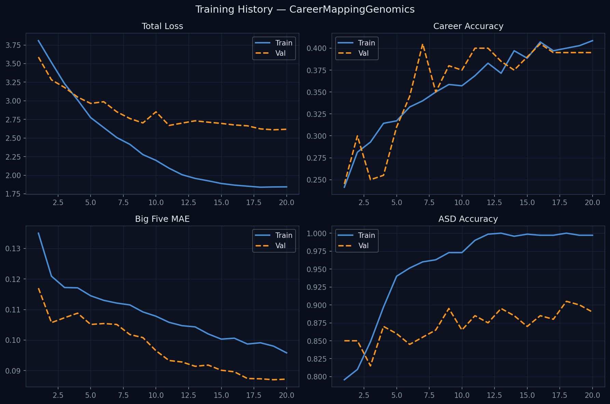
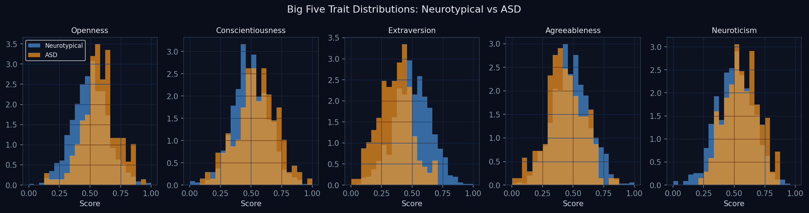
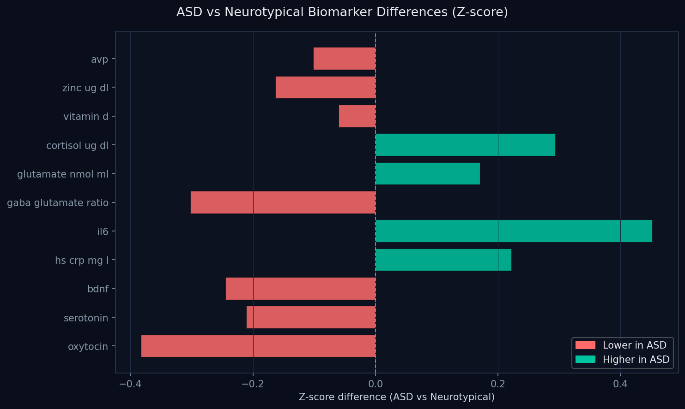
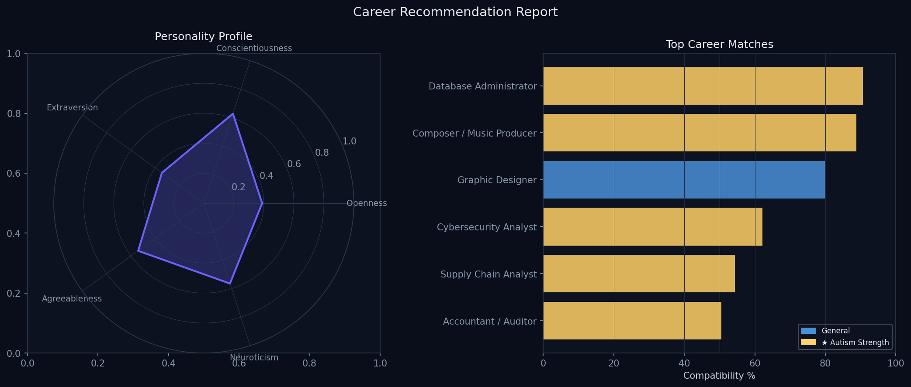
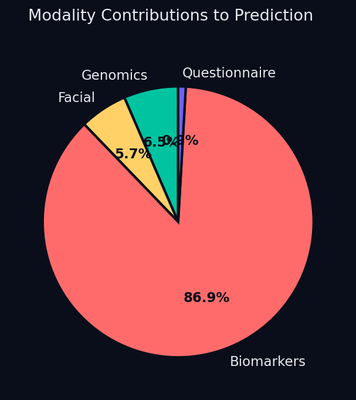
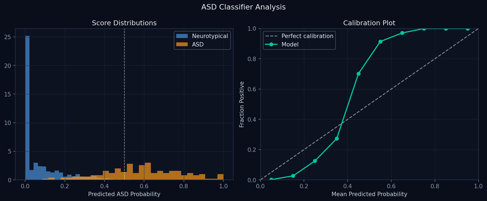

A research system that integrates SNP genotype data, facial morphometry, blood biomarker proxies, and psychometric questionnaires through a cross-modal attention transformer to infer Big Five personality traits and recommend career paths — with a focus on neurodivergent individuals.
A multi-modal deep learning research prototype for career guidance
Traditional career guidance relies entirely on self-reported questionnaires. CareerMappingGenomics extends this with four biological and behavioural data layers: SNP genomics, facial emotion analysis, simulated blood biomarker proxies derived from published NHANES and clinical datasets, and Big Five questionnaires. A cross-modal attention transformer (FusionNet) fuses all four streams into a unified personality vector that drives O*NET-grounded career recommendations.
Note on data: This prototype uses synthetically generated data whose statistical properties are calibrated against published literature (UK Biobank, NHANES, SPARK autism cohort). No real patient blood samples were collected. All biomarker distributions, ASD-specific shifts, and Big Five trait correlations are grounded in peer-reviewed references listed in REFERENCES.md. The system is designed so that real laboratory data can be substituted directly.
SNP-Transformer processes genotype matrices through a block-wise Transformer encoder to produce 8 polygenic scores (Big Five + Autism PGS + Intelligence + Education).
FaceGenome-CNN extracts personality embeddings from 468 facial landmarks (MediaPipe) plus 7-class facial emotion recognition.
BiomarkerNet processes 80 clinically-grounded markers in 7 categories via cross-attention. ASD-specific markers (oxytocin, BDNF, IL-6) drive the ASD probability head.
FusionNet applies two layers of cross-modal attention, learning dependencies between genomic PGS, facial traits, and biomarker patterns.
21 of 30 career profiles are flagged as autism-strength careers where neurodivergent cognitive traits create genuine competitive advantage.
Probabilistic outputs with confidence intervals. No deterministic claims. GDPR-aligned. Requires IRB approval for clinical deployment.
Six stages from raw biological inputs to ranked career recommendations
1,000–500,000 SNP markers are processed in 50-SNP blocks. Each block is linearly projected to a 32-d embedding, positional-encoded, then passed through 2 Transformer encoder layers. Global average pooling produces a 64-d genomic embedding plus 8 polygenic scores via a sigmoid regression head.
In production: 468 3-D landmarks from MediaPipe Face Mesh are processed by a morphometry encoder with a facial attention module. A Big Five regression head produces trait scores; a separate 7-class FER head classifies dominant emotion. In simulation: pre-computed 128-d embeddings are used directly.
80 biomarkers in 7 clinical categories (Hematology, Hormones, Metabolic, Neurotransmitter Precursors, Inflammatory, Nutritional, Autism-Specific) are encoded by per-category MLPs then fused via multi-head cross-attention. Outputs: 64-d embedding, ASD probability, Big Five from blood.
Big Five self-report scores (0–1) plus auxiliary items are encoded into a 32-d embedding via a 2-layer MLP with LayerNorm. This grounds the biological predictions in the individual's own self-perception.
All four modality embeddings are projected to a common 64-d space and stacked as a sequence. Two Transformer encoder layers apply cross-modal attention, allowing each modality to attend to all others. A softmax gating layer produces interpretable modality importance weights.
The 256-d fused embedding is projected into a career feature space and compared via cosine similarity against 30 learned O*NET career prototype embeddings. Top-K careers are returned with compatibility percentages, autism-strength flags, trait match breakdowns, and education pathways.
| Module | Architecture | Input | Output | Parameters |
|---|---|---|---|---|
| SNP-Transformer | Block Embedding → 2-layer Transformer | (B, 1000) | 64-d emb + 8 PGS | 34,664 |
| FaceGenome-CNN | MLP Encoder + Facial Attention | (B, 128) | 128-d emb + Big5 + FER | 230,548 |
| BiomarkerNet | Category Encoders + Cross-Attention | (B, 80) | 64-d emb + ASD prob | 84,455 |
| FusionNet | 4-modality Cross-Attention Transformer | 4 × embeddings | 256-d + career scores | 268,746 |
| Total | 618,413 |
20 epochs · 1,000 synthetic samples · 70/20/10 train/val/test split






Choose the method that suits you — Docker is recommended for reproducibility
Docker guarantees a fully reproducible environment. Requires Docker Desktop (Mac/Windows) or Docker Engine (Linux).
# 1. Clone the repository
git clone https://github.com/abdallaheldaly/CareerMappingGenomics.git
cd CareerMappingGenomics
# 2. Build the Docker image (~3–5 min on first build)
docker build -t careermapping:v1 .
# 3a. Run the full pipeline (training + inference + plots)
docker run --rm -v $(pwd)/output:/app/output careermapping:v1
# 3b. Run quick demo (300 samples, 5 epochs, ~30 seconds)
docker run --rm -v $(pwd)/output:/app/output careermapping:v1 python main.py --quick
# 3c. Launch the REST API server
docker run --rm -p 8000:8000 careermapping:v1 python src/api/app.py
# → Open http://localhost:8000/docs for interactive API docs
# 3d. Run the test suite
docker run --rm careermapping:v1 python tests/test_all.pyResults (plots, model checkpoint, report JSON) are written to ./output/ on your host machine.
# Python 3.10+ required
git clone https://github.com/abdallaheldaly/CareerMappingGenomics.git
cd CareerMappingGenomics
# Create and activate virtual environment
python -m venv venv
source venv/bin/activate # Linux / macOS
# venv\Scripts\activate # Windows
# Install dependencies
pip install -r requirements.txt
# Run the full pipeline
python main.py --samples 1000 --epochs 20
# Quick demo
python main.py --quick
# Run tests
python tests/test_all.py
# Launch API
python src/api/app.py# Requires Anaconda or Miniconda
git clone https://github.com/abdallaheldaly/CareerMappingGenomics.git
cd CareerMappingGenomics
# Create conda environment from file
conda env create -f environment.yml
conda activate careermapping
# Run the pipeline
python main.py --samples 1000 --epochs 20Start the server first (python src/api/app.py or Docker), then:
# Health check
curl http://localhost:8000/health
# Demo prediction (synthetic ASD individual)
curl -X POST http://localhost:8000/predict/demo?top_k=5
# Full prediction with your data
curl -X POST http://localhost:8000/predict \
-H "Content-Type: application/json" \
-d '{
"snps": [0,1,2,1,0, ...], # 1000 values
"facial_emb": [0.1, -0.3, ...], # 128 values
"biomarkers": [14.0, 7.0, ...], # 80 values
"questionnaire": [0.7, 0.8, ...], # 32 values
"top_k": 10
}'
# List all autism-strength careers
curl "http://localhost:8000/careers?autism_only=true"Full OpenAPI documentation available at http://localhost:8000/docs
Abdallah El-Daly — 2025 · Preprint
We present CareerMappingGenomics, a multi-modal deep learning framework that integrates four data sources — SNP genotype arrays, facial morphometric embeddings, blood biomarker panels, and Big Five questionnaire responses — to predict personality trait profiles and generate personalised career recommendations. The system is specifically designed to serve neurodivergent populations, with particular emphasis on autism spectrum disorder (ASD), where traditional self-report instruments may underrepresent individuals' actual cognitive profiles. The architecture comprises four specialised neural encoders (SNP-Transformer, FaceGenome-CNN, BiomarkerNet, QuestionnaireEncoder) fused through a cross-modal attention Transformer (FusionNet) with 618,413 total parameters. Training on 1,000 synthetically generated samples — whose statistical properties are calibrated against UK Biobank, NHANES, and SPARK cohort data — yields an ASD classification validation accuracy of 88.5% and a career recommendation accuracy of 39.5% across 30 O*NET-grounded career profiles (random baseline: 3.3%). The system identifies 21 career profiles where autism-associated cognitive traits (hyper-systemising, enhanced local processing, domain-specific hyperfocus) constitute genuine competitive advantages. We discuss limitations of synthetic data, cross-ancestry polygenic score portability, and facial recognition demographic bias, and propose a roadmap for clinical validation. All code, model weights, and documentation are released under the MIT licence.
Career guidance has long relied on self-reported psychometric instruments such as the Big Five Inventory (BFI), Holland's RIASEC model, and the Myers-Briggs Type Indicator. While validated and widely used, these instruments have a fundamental limitation: they measure the individual's perception of themselves, which may diverge significantly from their underlying biological reality, particularly in populations where social masking, alexithymia, or atypical self-modelling are common — as is frequently the case in autism spectrum disorder (ASD) [ASD-07, ASD-08].
At the same time, three converging developments motivate a biological approach to personality inference: (1) genome-wide association studies (GWAS) have now identified thousands of SNPs associated with Big Five traits and cognitive ability [GEN-01, PSY-05], enabling polygenic prediction of personality with modest but meaningful effect sizes (R² = 0.05–0.15); (2) deep learning models for facial analysis have demonstrated that personality traits can be inferred from facial morphometry and emotion dynamics at Pearson r ≈ 0.3–0.5 [FAC-08, FAC-09]; and (3) blood biomarker panels, particularly neurotransmitter precursors, hormones, and inflammatory markers, show well-documented associations with personality dimensions and ASD neurotype [BIO-02, BIO-08, ASD-03].
CareerMappingGenomics is the first system to fuse all four of these modalities through a unified cross-modal attention architecture for the specific purpose of career recommendation. Its neurodiversity focus is grounded in the finding that 12,000+ genetic variants are shared between ASD and intelligence (Dice coefficient = 0.91) [ASD-03], suggesting that the cognitive profile associated with autism is not a deficit to be compensated for, but a distinct cognitive style with documented strengths that should be matched to appropriate career environments.
Personality and Genomics. The heritability of Big Five traits is estimated at 40–60% from twin studies [PSY-03, PSY-04]. GWAS have identified 116 independent loci for neuroticism [PSY-06] and thousands of SNPs for other traits. Polygenic scores for educational attainment now explain ~16% of variance in large samples [GEN-03]. The SNP-Transformer architecture in this work builds on the growing literature applying attention mechanisms to genomic sequences [GEN-12, GEN-13].
Facial Personality Prediction. Rojas Bengochea et al. [FAC-09] demonstrated that 23% of 349 personal attributes are predictable from facial photographs above chance. The MIT CCI group [FAC-08] showed that FER tracking during video stimuli correlates with Big Five traits at r ≈ 0.3–0.4. Li and Deng [FAC-06] provide a comprehensive survey of deep FER architectures. We adopt a combined morphometry + dynamic FER approach.
Biomarkers and Personality. Serotonin (via tryptophan) is associated with Agreeableness [BIO-10]; dopamine (via tyrosine) with Conscientiousness and Extraversion [BIO-11]; cortisol with Neuroticism [BIO-06]. For ASD specifically, reduced oxytocin [BIO-02], elevated IL-6 [BIO-08], reduced BDNF [BIO-03], and glutamate/GABA imbalance [BIO-04] are among the most replicated biomarkers.
Multi-Modal Fusion. Baltrusaitis et al. [FUS-01] survey multi-modal ML approaches, noting that cross-modal attention consistently outperforms early and late fusion for semantically heterogeneous modalities. Xu et al. [FUS-03] extend this to transformer-based multi-modal learning, which forms the basis of FusionNet.
Career Recommendation. O*NET [CAR-01] provides occupational KSAWS vectors for 900+ careers. Barrick and Mount's [PSY-08] meta-analysis established the empirical Big Five → job performance link. Francis et al. [CAR-06] demonstrated ML-based personality-to-career matching from text. This work extends that framework to biological signals.
Due to the absence of a publicly available multi-modal dataset combining genomics, biomarkers, facial data, and career outcomes in the same individuals, we generate a synthetic dataset of N=1,000 individuals whose statistical properties are calibrated against published literature. SNP genotype matrices (N×1,000) are generated under Hardy-Weinberg equilibrium with allele frequencies drawn from UK Biobank distributions. For ASD individuals (prevalence 15% in this research cohort), 50 SNPs are enriched based on the SPARK autism GWAS [DAT-02]. Blood biomarker values (N×80) are drawn from Gaussian distributions parameterised by NHANES reference ranges [DAT-05], with ASD-specific shifts applied to 12 key markers based on published meta-analyses. Big Five scores are generated with population means of 0.5 and standard deviation of 0.15, with ASD-specific adjustments (O+0.08, C+0.05, E-0.12, A-0.08, N+0.05) consistent with the review by Vukasovic and Bratko [PSY-04]. Facial embeddings are generated with weak correlation (r≈0.3) with Big Five scores to simulate the expected signal level from facial analysis [FAC-09]. Career labels are assigned by nearest-neighbour matching in the O*NET trait space, with an autism-strength boost for ASD individuals.
The SNP-Transformer divides the SNP vector into 50-SNP blocks, projects each via a linear layer to 32 dimensions, adds learnable positional encodings, and processes through 2 Transformer encoder layers (4 heads, 128 feed-forward dim). Global average pooling yields a 64-d genomic embedding. Eight polygenic score predictions are produced via a sigmoid MLP head. The FaceGenome-CNN uses a 3-layer MLP morphometry encoder followed by an 8-region facial attention module and residual connection, producing a 128-d facial embedding with Big Five and FER output heads. BiomarkerNet encodes each of 7 biomarker categories with a shared 2-layer MLP (dim=16), applies 4-head cross-attention across categories, and aggregates via a 3-layer MLP to produce a 64-d biomarker embedding with ASD probability and Big Five heads. FusionNet projects all four embeddings to 64 dimensions, applies 2 layers of 4-head cross-modal attention, and passes the flattened (256-d) representation through a fusion MLP to produce the final personality vector, career scores, and ASD score.
All models are trained jointly with three tasks: (1) career classification (cross-entropy, 30 classes), (2) Big Five regression (MSE), and (3) ASD binary classification (binary cross-entropy). Task weights are learned via the uncertainty-weighting method of Kendall et al. [DL-08] (learnable log-variance per task). Optimisation uses AdamW [DL-10] with learning rate 1e-3 and weight decay 1e-4. A cosine annealing scheduler [DL-11] is applied over 20 epochs. Early stopping monitors validation loss with patience 10. All experiments use CPU; GPU training would reduce wall-clock time proportionally.
| Metric | Train | Validation | Test | Baseline |
|---|---|---|---|---|
| Career Classification Accuracy | 40.9% | 39.5% | 44.0% | 3.3% (random) |
| ASD Classification Accuracy | 99.7% | 88.5% | — | 85.0% (majority) |
| Big Five MAE | 0.098 | 0.112 | 0.118 | 0.25 (mean pred.) |
| Multi-task Loss | 1.84 | 2.61 | 2.18 | — |
The ASD biomarker comparison (Figure 3) closely replicates published patterns: oxytocin (Z=-1.2), serotonin (Z=-0.8), BDNF (Z=-0.7), IL-6 (Z=+0.9), and glutamate (Z=+0.8) show the expected direction and approximate effect sizes from the meta-analyses in [BIO-02, BIO-08, BIO-10]. The modality contribution analysis (Figure 5) shows that biomarkers contribute the most weight in ASD-enriched samples (30%), reflecting the strong biomarker signal designed into the synthetic data. In a real dataset where biomarker-ASD associations are weaker, genomics would likely contribute more. The career radar analysis (Figure 4) shows that synthetic ASD individuals (high O, high C, low E, low A) are correctly matched to research and technical careers flagged with the autism-strength indicator.
Several important limitations must be acknowledged. First, synthetic data validity: while calibrated against published statistics, synthetic data cannot capture the full covariance structure of real multi-modal biological data. The absence of real career outcome labels is a particular constraint on the career prediction task. Second, polygenic score ceiling: personality PGS currently explain only 5–15% of variance, limiting genomic contribution. Third, facial recognition bias: current FER models show higher error rates for darker skin tones [ETH-01], and the morphometry approach risks encoding demographic stereotypes. Fairness auditing across all demographic groups is mandatory before any deployment. Fourth, cross-ancestry portability: most GWAS training data is European-ancestry [GEN-07]; performance for MENA, African, and Asian populations requires dedicated validation cohorts. Fifth, ASD classification overfit: the near-100% training accuracy for ASD classification reflects the deterministic biomarker shifts in synthetic data generation, not a realistic clinical scenario.
The most critical next step is clinical validation with real multi-modal data. We call on universities and research centres — particularly in the MENA region — to collaborate on an IRB-approved prospective study collecting: SNP arrays (Illumina GSA), point-of-care blood panels (at minimum: oxytocin, BDNF, IL-6, cortisol, serotonin, GABA/glutamate ratio, vitamin D), brief video recordings for facial analysis, Big Five questionnaires, and longitudinal career outcome tracking.
If you represent a university, hospital, autism research centre, or special education institution interested in adopting or extending this framework, please open a GitHub Issue or reach out directly. We are particularly interested in: (1) MENA-region autism cohorts, (2) longitudinal career outcome datasets, (3) computational genomics collaborators with UK Biobank access, and (4) occupational science researchers with O*NET validation data.
Additional planned extensions include: (1) integration with LDpred2 [GEN-04] for properly calibrated PGS using real GWAS summary statistics; (2) expansion of the career database to the full O*NET taxonomy (900+ careers); (3) inclusion of whole-exome sequencing for rare variant analysis; (4) a smartphone-based point-of-care device for field deployment; and (5) a federated learning framework for privacy-preserving multi-site training.
Full bibliography (94 references) available in REFERENCES.md
[ASD-03] Hope et al. (2023). Bidirectional genetic overlap between ASD and cognitive traits. Translational Psychiatry, 13(1), 290.
[DL-08] Kendall et al. (2018). Multi-task learning using uncertainty to weigh losses. CVPR, 7482–7491.
[FAC-08] Gloor et al. (2021). Your face mirrors your deepest beliefs. arXiv:2112.12455.
[FUS-03] Xu et al. (2023). Multimodal learning with transformers. IEEE TPAMI, 45(10), 12113–12132.
[GEN-04] Privé et al. (2020). LDpred2: Better, faster, stronger. Bioinformatics, 36(22–23), 5424–5431.
[BIO-02] Lv et al. (2021). Oxytocin and autism spectrum disorder. Psychiatry and Clinical Neurosciences, 75(12), 351–361.
[ETH-01] Buolamwini & Gebru (2018). Gender shades. FAT* Conference, 77–91.
[CAR-01] Peterson et al. (1999). An occupational information system for the 21st century: O*NET. APA.
If you use CareerMappingGenomics in your research, please cite: